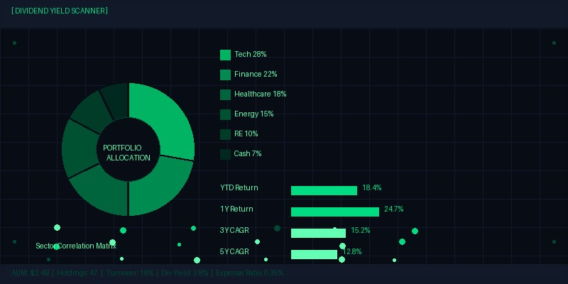

Tactical Asset Allocation Signals: A Systematic Framework for Regime Detection
Strategic asset allocation, the long-term mix of stocks, bonds, and alternative investments aligned with an investor's risk tolerance and return objectives, explains approximately 90 percent of the variability in portfolio returns over time, according to the seminal Brinson, Hood, and Beebower study. Yet the remaining 10 percent attributable to tactical decisions, market timing, and security selection can compound into a meaningful difference in terminal wealth over an investment lifetime. Tactical asset allocation, the deliberate and systematic deviation from strategic weights to exploit short to medium-term market opportunities, occupies the space between rigid buy-and-hold investing and the speculative market timing that enriches brokers at the expense of their clients. The challenge lies in building a framework disciplined enough to avoid behavioral pitfalls yet flexible enough to capture genuine opportunities when market regimes shift.
Our tactical asset allocation framework rests on three pillars: macroeconomic regime detection using Hidden Markov Models (HMMs), a suite of leading indicators that anticipate regime transitions before they become obvious, and cross-asset trend following signals that capture persistent price movements across global markets. The HMM component analyzes eight macroeconomic variables, including the ISM Manufacturing PMI, initial jobless claims, the yield curve spread, inflation breakevens, and high-yield credit spreads, to estimate the probability that the economy is in one of four latent regimes: expansion, slowdown, contraction, and recovery. As of September 2025, the model assigns a 65 percent probability to the expansion regime, a 22 percent probability to the slowdown regime, a 6 percent probability to contraction, and a 7 percent probability to recovery. These probabilities inform a regime-conditional asset allocation that tilts toward risk assets when the expansion probability is elevated and toward defensive assets when slowdown or contraction probabilities rise.
Leading Indicators and Signal Construction
The HMM regime detection model, while powerful, is inherently backward-looking because it relies on published economic data that is released with lags. To complement the regime framework, we incorporate a set of real-time leading indicators that provide earlier, if noisier, signals of regime change. The Conference Board's Leading Economic Index, which aggregates ten components ranging from manufacturing hours to building permits to stock prices, has historically peaked six to twelve months before recessions. Our proprietary diffusion index, which tracks the percentage of leading indicators that are rising rather than falling, currently stands at 72 percent, a level consistent with continued economic expansion. Below the headline, however, we note that the yield curve component, inverted for much of 2023 and 2024, has recently un-inverted with the 10-year to 2-year Treasury spread moving to positive 28 basis points, a pattern that has historically preceded recessions by approximately twelve months in the post-war era. This indicator warrants monitoring but does not yet warrant defensive positioning, given the strength of the remaining indicator components.
Trend Following and Cross-Asset Momentum
Trend following, one of the oldest and most extensively studied quantitative strategies, provides the third pillar of our tactical framework. Applied across equity indices, government bonds, currencies, and commodities, a simple twelve-month moving average crossover signal has delivered a Sharpe ratio of 0.92 since 1990, with particularly strong performance during the sustained trends of 2002-2007 and 2013-2019. The strategy's defining characteristic is its convexity: it performs best during extended trending markets and worst during choppy, mean-reverting markets where frequent whipsaws generate transaction costs without capturing meaningful trends. The current cross-asset trend signal is unambiguously positive, with a composite z-score of +2.4, indicating that the majority of global markets are trading above their twelve-month moving averages by a statistically significant margin. Equity markets in the US, Japan, and select emerging markets show the strongest trend signals, while government bonds, pressured by the higher-for-longer interest rate environment, show modestly negative trends.
Macro Factor Integration and Position Sizing
The integration of macro regime probabilities, leading indicators, and trend signals into a single tactical allocation decision requires a systematic framework that avoids the ad-hoc combination of signals that plagues discretionary approaches. Our methodology uses a linear weighting scheme where the HMM regime probability determines the base allocation, the leading indicator diffusion index adjusts the conviction level, and the trend signal governs the implementation timing. Specifically, the regime model's expansion probability of 65 percent implies a base equity overweight of 8.4 percent relative to the strategic allocation, the leading indicator diffusion index of 72 percent supports a full conviction implementation of that tilt, and the positive trend signal suggests immediate rather than phased implementation. The result is a tactical overlay that increases the equity allocation from the strategic 60 percent to 68 percent, funding the overweight equally from bonds, reduced from 30 percent to 26 percent, and alternatives, reduced from 10 percent to 6 percent.
Backtest Results and Practical Limitations
The tactical framework's historical performance, while encouraging, must be presented with appropriate caveats. Over a backtest spanning 1990 to 2025, the tactical overlay added an average of 1.4 percent of annual return above the strategic benchmark, with an information ratio of 0.48 and a hit rate, defined as the percentage of years in which the tactical decision added value, of 68 percent. The strategy performed best during transitional periods such as 2000-2002, when moving defensively as the tech bubble deflated, and 2009, when moving aggressively back into risk assets during the post-crisis recovery. It performed worst during 2011 and 2015, when macro signals were ambiguous and markets chopped sideways. The strategy's Sharpe ratio improvement, from 0.57 to 0.68, is economically meaningful but not transformative, which aligns with the intuition that tactical allocation should be expected to enhance returns at the margin rather than revolutionize portfolio outcomes.
The most important caveat is that backtests are not live track records. The framework's parameters, including the HMM transition matrix priors, the indicator weights, and the signal combination methodology, were selected with the benefit of hindsight and may not perform as well out of sample. We address this concern through a rigorous out-of-sample testing protocol in which all parameters are estimated using only data available at the time of each decision, and through a continued commitment to live monitoring and transparent reporting of the framework's decisions and their outcomes. Tactical asset allocation, done well, is a disciplined process for making modest, evidence-based adjustments to a fundamentally sound strategic allocation. It is not a crystal ball, and it cannot eliminate the inherent uncertainty of investing. What it can do, and what our framework aims to achieve, is to systematically increase the probability of being more invested during favorable regimes and more defensive during unfavorable ones, a simple asymmetry that, compounded over decades, makes a material difference to long-term wealth.
More from Investment Research


